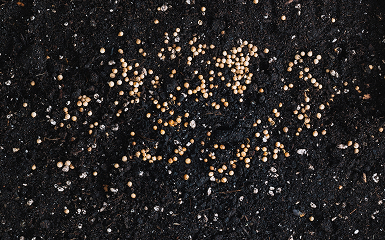
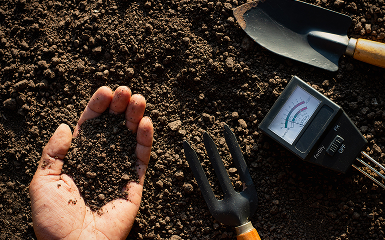

Application Guide
제품 사용 가이드
입상 토양개량제는 속효성이 아니라 토양 속에서 서서히 반응하는 완효성 제품입니다.
알기 쉬운 흙 이야기
1분이면 흙이 쉬워집니다
흙·비료·토양개량 이야기를 쇼츠로 전해 드립니다. 누르면 이 화면에서 바로 재생됩니다.
참고: 이완주 『흙을 알아야 농사가 보인다』 · 토양학 서적을 바탕으로 (주)한일씨앤에스 자체 제작
작물별 시비 타이밍 요약
좌우로 밀어 전체 일정을 확인하세요
- 작물
- 1월
- 2월
- 3월
- 4월
- 5월
- 6월
- 7월
- 8월
- 9월
- 10월
- 11월
- 12월
- 벼
- 모내기 한달 전
- 모낸 후 15일 이내
- 출수기 30일 전
- 고추 · 토마토 · 오이
- 정식 3~4주전
- 마늘 · 양파 · 무 · 감자
- 정식 2~3개월 전
- 가을 로터리 전
- 과수
- 낙엽 후 휴면기
- 낙엽 후 휴면기
- 시설하우스
- 정식 3~4주 전 + 생육기 엽상 보완
제품 사용 가이드

혼용 금지
질소질·복합비료와 혼용해서 사용하지 말아야 합니다.
경운 추천
가능한 표면에 방치 금지,
작토층 전체에 골고루 혼화
1~2주 시차 살포
토양개량제 먼저,
1~2주 뒤 화학비료 사용

토양검정
과다 시비 시 미량요소
결핍과 길항작용 주의